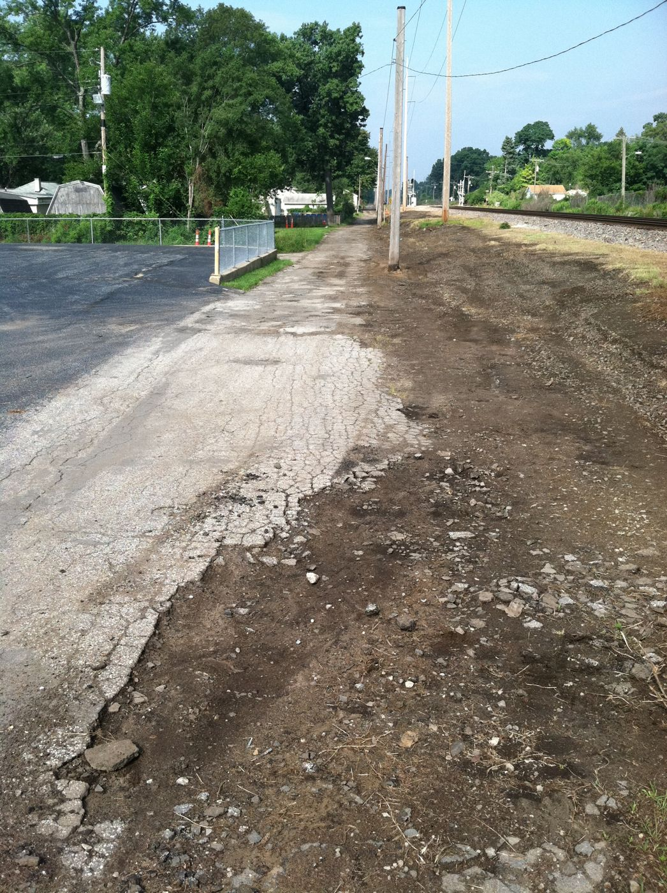
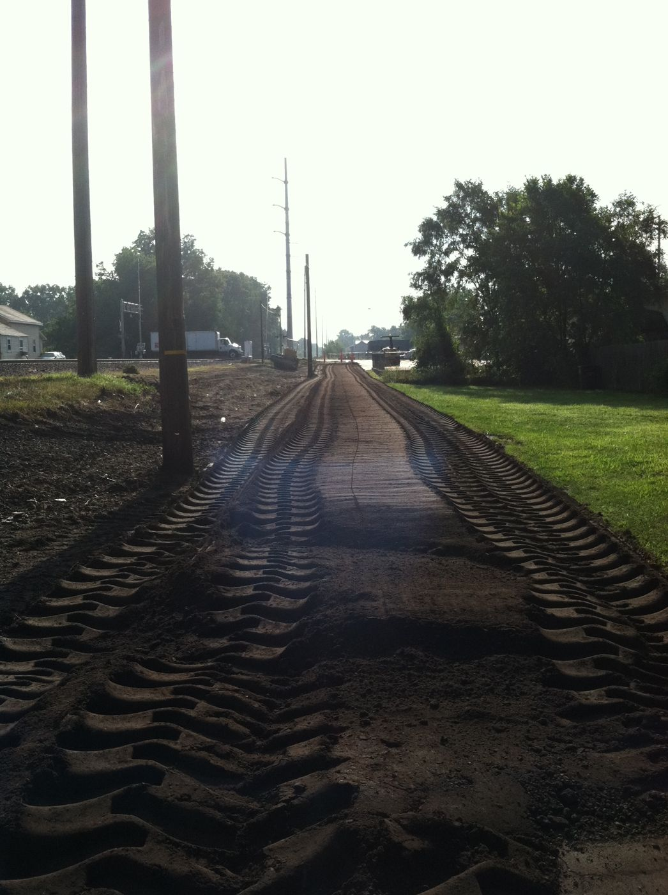
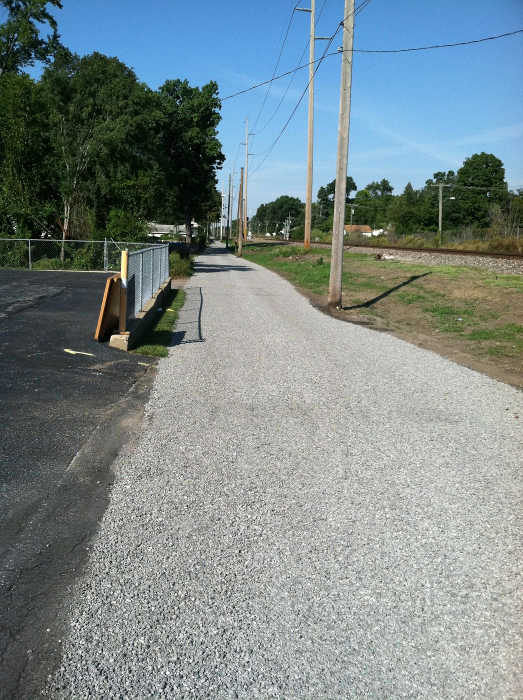
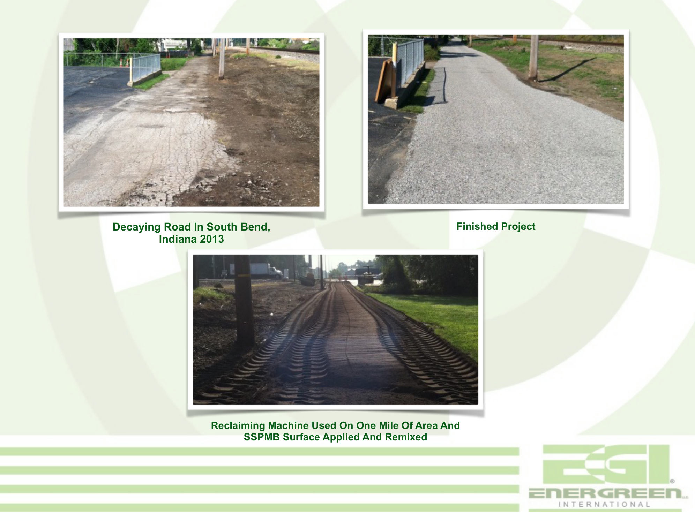

A failed, alligatored asphalt road beside the rail tracks was ground up where it lay, re-bound with the product, and compacted back into service — one mile of full-depth reclamation, using the road's own material.
The deck tells it in three frames: the decaying road in 2013, cracked through in the alligator pattern that signals base failure; a reclaiming machine run over one mile of the road with the product applied and remixed into the pulverized material; and the finished, re-compacted surface. This is the full-depth-reclamation use case in its purest form — the failed road itself becomes the aggregate for the new base.



